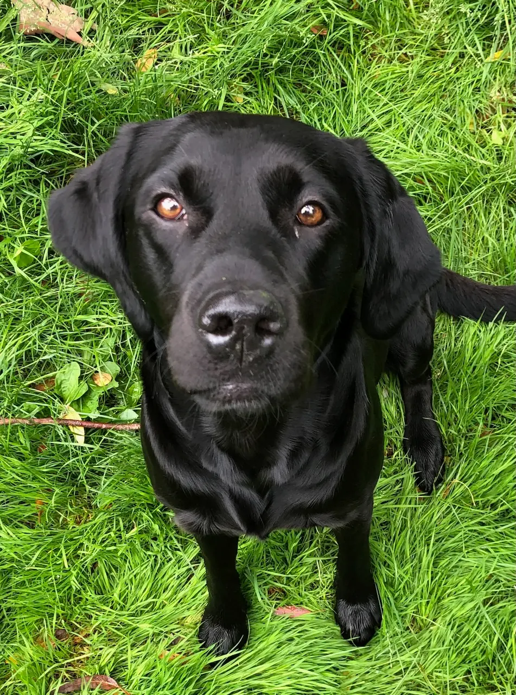

About Dogs of Essex
Helping dog owners discover the very best walks across Essex.
Why I created Dogs of Essex
Dogs of Essex started with Poppy, my Labrador. Every time we wanted to try somewhere new, I found myself searching for the same answers:
- Can she be off lead?
- Can she swim? (she loves a swim!)
- Is there a dog-friendly café afterwards?
No single website answered those questions. The information was scattered across reviews, forums and old blog posts - and rarely written with dogs in mind. So I started keeping my own notes, and Dogs of Essex grew from there: one honest, dog-first guide to walking in Essex.
How we review walks
Every walk is visited and reviewed using the same set of criteria, including suitability for reactive dogs, puppies and senior dogs, swimming opportunities, shade, mud, parking and nearby dog-friendly places. That's why the star ratings aren't random - they reflect the same checks applied to every walk, so you can compare them fairly.
Accuracy
We aim to keep every walk accurate and up to date, but things change - a café closes, a path floods, livestock arrives in a field. If you spot something that's out of date or wrong, we'd genuinely love to hear about it. Every walk page has a “Help improve this walk” section, and you can always get in touch below.
Meet Poppy

Poppy is my Labrador and chief walk tester. If there's water nearby, she'll almost certainly find it.
Dogs of Essex isn't about finding the longest walks - it's about finding the right walk for you and your dog.
Get in touch
Want to help shape Dogs of Essex? Pick whichever fits: